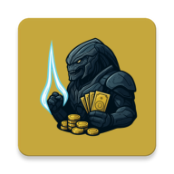

About
Samuel Appleby
Programmer
Programmer
Email:
sambuzzappleby@hotmail.co.uk
Phone: +44 7465439846
Education
My most recent academic experience is passing my thesis defence (02/02/2026) for my PhD Computer Science. My thesis is titled:
On the Modelling of Temporal Data
Linear Logics in Event Logs and Deep Reinforcement Learning in Real-Time Simulations
Which focuses on bridging the gap between temporal modelling as found
in Business Process Management (BPM) versus those in real-time systems
exploited by (deep) reinforcement learning. Other major milestones
include:
Linear Logics in Event Logs and Deep Reinforcement Learning in Real-Time Simulations
 PhD Computer Science (2022–2026)
Newcastle University
MSc Computer Game Engineering (2020–2021)
Distinction
Newcastle University
BSc Computer Science (2017–2020)
1:1
Newcastle University
PhD Computer Science (2022–2026)
Newcastle University
MSc Computer Game Engineering (2020–2021)
Distinction
Newcastle University
BSc Computer Science (2017–2020)
1:1
Newcastle University
Recent Experience
Prior to my PhD and during my MSc in Computer Game Engineering, I was a junior network programmer at Lucid Games Ltd. developing Destruction AllStars, a new release for the (also newly released) PlayStation 5. Here, I became familiar with REST API technologies and Node.js. My significant contributions include:
- Managing message protocols between the client and the web service, specifically, the integration of filtering into their matchmaking system.
- Extending Unreal's Gauntlet's Automation Framework. Here, I re-adapted the automation tests to communicate and synchronise with the web service, allowing for greater control from the network. I also wrote the HTTP request system for this project.
Recent Projects

My most recent project is called Arbiter, an abritrage
betting application for Android. Combining my work and academic
experience, I was able to produce a pipeline with many components
leveraging the following:
- Databases technologies and querying, including PostgreSQL and SQLite
- Cloud platform hosting from Microsoft Azure
- Cloud messaging software using Google Firebase Cloud Messaging
- UI design using Android Jetpack Compose
- UX design for an Android application